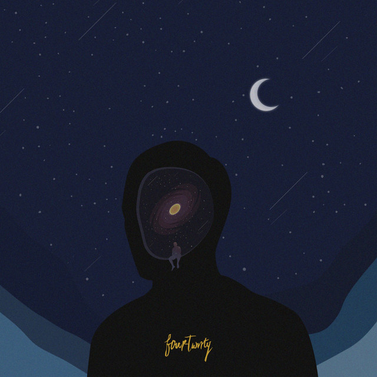

Albums and Singles

Lelaku (2015)
Ego & Fungsi Otak (2018)

Kusut [Lofi Version] (2019)
Kursi Goyang (2021)
Mangu (2022)
Nalar (2023)
GENRE: FOLK-POP
ORIGIN: JAKARTA, INDONESIA
FORMED: 2010
Ryan Maulana
Nuwi
Ari Lesmana
Primanda Ridho
Andi Armand
About
Terbentuk sejak 20 April 2010, Fourtwnty adalah band dengan genre musik folk pop yang dipelopori oleh Ari Lesmana, Nuwi dan Roots. Di tahun 2014, mereka merilis karya pertama mereka dalam bentuk mini album berjudul “Setengah Dulu”. Mini album tersebut merupakan pergerakan awal Fourtwnty dalam menyampaikan pesan kepada pendengar dengan nyaman dan tenang. Ari, Nuwi dan Roots memiliki misi untuk menyampaikan pesan toleransi, kecintaan terhadap alam, persahabatan, keluarga dan pluralisme melalui karya-karya mereka.
Albums and Singles
Lelaku (2015)
Ego & Fungsi Otak (2018)
Kusut [Lofi Version] (2019)
Kursi Goyang (2021)
Mangu (2022)
Nalar (2023)
Upcoming Shows